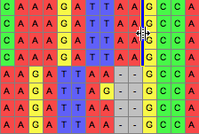
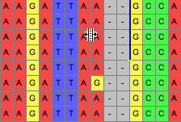
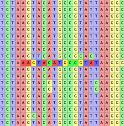

Sequence Alignment using Align
Many of the sequence alignment tools in Mesquite are provided by the Align package provides some basic tools involving alignment of sequence data. You may also wish to consider using the Opal and Opalescent packages for Mesquite.
The Align package was written by David R. Maddison, Travis J. Wheeler, and Wayne P. Maddison. The citation for this tool is provided below.
The Align package contains:
- Tools for manual alignment
- Tools for automated alignment
- Various statistics about taxa based about alignments
- Some visualization features.
Manual Alignment Tools
Moving bases by hand
There are several tools available for moving bases by hand. These tools have a "Live update analyses, etc." option in their popup menus. If this is chosen, then all calculations (e.g., charts, character tracings, etc.) that depend upon these data will be redone as you use these tools. (Recalculations will be done once you let go of the mouse button, in any event.) If some of these calculations take a while, this can dramatically slow down use of these tools.There are some visualization features in Mesquite that can aid in manual alignment.
Move Blocks Tool
This tool will move a contiguous block of a single sequence. If you move the tool between two bases it will let you split a block in two, inserting gaps.If you wish, you can move more than a single, contiguous block by turning on "Move Selected Block" within the tool's popup menu, then using the tool to move selected bases and gaps.
Multiple Block Splitter
This tool allows one to draw a line between two sites, through one or more sequences, as shown in the following image:
Then, if the tool use used upon the line, those sequences can be dragged, opening up gaps along the line:

If you hold the Option key down, then all sequences other than those delimited will be moved. There are additional options in the popup menu of the tool's button that allow you to request that entire sequences are moved, or all sequences on one side. You can also request that the matrix be expanded on either end as necessary as you move sequences around; by default this option is off.
 Selected Block Mover
Selected Block Mover
This tool move move a selected block of cells. There are additional options in the popup menu of the tool's button. For example, you can also request that the matrix be expanded on either end as necessary as you move sequences around; by default this option is off. Push Sequence Tool
Push Sequence Tool
This tool pushes to the right the entire sequence to the right of the tool, or, if you have the Option key held down, it pushes to the left the entire sequence to the left of the tool.Shifting sequences
Select a portion of a single sequence. If you then choose Matrix>Alter/Transform>Shift Other to Match Selected..., then you will be presented with a dialog box that lets you choose a range of taxa, as well as a percentage. By default the range of taxa is the remaining taxa in the matrix. The default percentage is 75%.If you press OK, Mesquite will look at each of the taxa within the range, and see if it can find a portion of each that is at least as similar as the percentage indicated to the selected portion (no gaps allowed). For each taxon that it can find such a match, it will shift those sequence such that the matched regions are lined up with the selected region.
Note that this is not an alignment algorithm; it simply shifts the sequences, maintaining whatever gaps are there or not in the sequences to be shifted.
You can also choose Matrix>Alter/Transform>Shift To Minimize Stop Codons to shifts each sequence 0, 1, or 2 bases so as to minimize the number of stop codons. The amount each sequence will be shifted will vary from sequence to sequence. This feature requires that codon positions be designated.
Removal of Gaps
Remove All-Gap Characters
Choosing this from Matrix>Alter/Transform>Remove All-Gap Characters will remove all sites in the matrix that consist entirely of gaps.Collapse Gaps
With a block of the matrix selected, choosing Matrix>Alter/Transform>Collapse Gaps will remove all gaps in the selected block, with the bases or amino acids pushed as far to the left as possible.Selecting Hint
To select from one cell to the end of the sequence, select the cell and then hit Shift-Alt-Arrow key (or, on OS X, Shift-Option-Arrow key), where the arrow key is either the right or left arrow key.Preparing the Matrix
Several options under Matrix>Alter/Transform may be useful to modify the matrix in preparation for alignment. Some of these options are under "Other Choices...".- Collapse Gaps to Left
- Collapse Gaps to Right
- Trim Terminal Gaps Character
- Gaps to Missing
- Missing to Gaps
- Terminal Gaps to ?
- Terminal ? to Gaps
- Reverse Complement
- Reverse
- Nucleotide Complement
Automated Alignment
Pairwise Aligner tool
This tool allows one to drag one or a selected set of sequences and drop them onto a reference sequence; the sequences dropped will then be aligned to the reference sequence, preserving whatever gaps are present in the reference sequence. In the process, if gaps need to be inserted into the reference sequence, then they will be also inserted into other, non-selected sequences.The dropdown menu for this tool allows you to change the gap opening cost (default 8) the gap extension cost (default 3) within bases of a sequences, as well as the equivalent costs at the ends of the sequence (default 2 and 2, respectively).
The default substitution costs are:
- for DNA and RNA data, 5 for a transition and 10 for a transversion
- for protein data, 5 for each substitution.
The dropdown menu also allows you to choose whether or not Mesquite reverse complements the sequences that are dragged if needed. If this option is chosen, then Mesquite will compare the alignment score of the sequence as it stands to the reference sequence, and the reverse complement of the sequence, and choose whichever of the two has the best alignment score, and align either the original or reverse-complemented sequence.
The options you set in the drop down menu can be made to be automatically chosen for all future uses by first choosing Ignore File Settings; Use Defaults, and then by choosing Save Current Settings as Defaults.
 Pairwise Shifter tool
Pairwise Shifter tool
This tool is very similar to the Pairwise Aligner tool, except that it does not do a full alignment, in the sense that it does not insert any new gaps into the sequence that is dragged. Instead, it simply shifts the entire sequence, to the right or left, in a way to optimize the match between the two sequences.The dropdown menu for this tool allows you to choose which base is used as the "anchor" base for the alignment. There are two options in the menu:
- Shift Dragged Sequence so that Dragged Base Matches its Counterpart
- Shift Dragged Sequence so that Base on Which it is Dropped Matches its Counterpart
The second option, "Shift Dragged Sequence so that Base on Which it is Dropped Matches its Counterpart", will cause the tool to have the following behavior: the user grabs the sequence to be shifted (the "dragged sequence") anywhere within the sequence, drags it and drops it onto a particular base (the dropped base) in the reference sequence (let's say the 200th base in the reference sequence). Mesquite internally does a standard pairwise alignment between the sequences, using a classic Needleman-Wunsch algorithm. It then looks at the dropped base (the 200th base in the dropped sequence in this example), and sees to which base it is aligned (its counterpart) in the dragged sequence in this behind-the-scenes alignment. Let's call this base in the dragged sequence the counterpart to the dropped base. Mesquite then shifts the entire dragged sequence, preserving existing gaps in that sequence, right or left until the counterpart to the dropped base is matched up to the dropped base in the reference sequence.
The dropdown menu also allows you to choose whether or not Mesquite reverse complements the sequences that are dragged if needed. If this option is chosen, then Mesquite will compare the alignment score of the sequence as it stands to the reference sequence, and the reverse complement of the sequence, and choose whichever of the two has the best alignment score, and shift either the original or reverse-complemented sequence.
The options you set in the drop down menu can be made to be automatically chosen for all future uses by first choosing Ignore File Settings; Use Defaults, and then by choosing Save Current Settings as Defaults.
Aligning nucleotide sequences to match an amino acid alignment
This feature allows one to take a matrix of nucleotides, and an existing alignment of their translated amino acids, and have the nucleotides realigned to match the amino acid alignment. To do this, you will need to have in the same Mesquite file both the nucleotide matrix and the protein matrix. For example, you could do the following:- Assign codon positions and genetic code to a nucleotide matrix (see the main Mesquite manual for details).
- Adjust each sequence so that its reading frame is correct, by using the Shift To Minimize Stops feature.
- Trim any incomplete codons from the ends of the sequences by selecting the entire matrix and choosing Alter>DNA/RNA Data Cell Manipulation>Trim Terminal Incomplete Codons. "Terminal Incomplete Codons" are nucleotides that are only part of a codon. For example, if one sequence starts at a third position, then that third position nucleotide represents only one-third of a codon, and it will be trimmed. Once this is done, only complete codons will be left in the sequence
- Translate the DNA matrix to amino acids by choosing Characters>Make New Matrix From>Translate DNA To Protein. You will now have the protein matrix in your file.
- Align the protein matrix. You could use, for example, the MAFFT Align feature described below. If instead you export the matrix (e.g., using the File>Export options), align the proteins in a separate program, you will then need to choose File>Include file to include the output of the alignment program into your file.
- Finally, go to your DNA matrix, and choose Matrix>Alter/Transform>Align DNA to Protein.
ClustalW Align
This feature allows one to select a single block of sequences, and then have ClustalW align them. To do this, select the block, then choose Matrix>Align Multiple Sequences>Clustal Align...You will be presented first with a query as to whether you want to do the ClustalW alignment on a separate thread, or on the same thread. Mesquite can do multiple things at once, because it can have one thing running on one computational "thread", and another thing happening on a separate thread. There is a main thread of the program that is the thread the user deals with directly, and that allows you to give commands to Mesquite (via menus, etc.). If this main thread is busy with a calculation, then you will not be able to ask for new things to happen in Mesquite until the calculation is done. By choosing "Separate" in the query that appears, you are asking Mesquite to create a thread separate from the main thread, thus enabling you to do things in Mesquite while the Clustal alignment is proceeding. However, if you do this, you must remember not to edit the matrix or close the window showing the matrix; if you do, Mesquite will be very unhappy. The safest thing to do is choose "No" to that query.
Once you make that choice, you will see a dialog box in which you must enter the directory location of ClustalW; if you use the Browse button in the dialog box you can choose ClustalW and have the location filled in automatically. If you wish, you can also alter the options of clustalw. If you then press OK, Mesquite will send that section of the matrix to ClustalW and ask for it to be aligned; it will then harvest the results and reincorporate that piece into the matrix.
The version of ClustalW that is to be used by Mesquite must be a version of ClustalW that is executable from the command line of your operating system.
MAFFT Align
This tool is just like the ClustalW Align feature described above, except that it works for the MAFFT alignment program.Muscle Align
This tool is just like the ClustalW Align feature described above, except that it works for Robert C. Edgar's MUSCLE program.Statistics
Align provides two statistics that can be calculate for each taxon in a matrix.The first, the Alignment Score, is simply the "cost" of the alignment between that taxon and a reference sequence, using Mesquite's default pairwise aligner. By default, the reference sequence is the first one in the matrix; it can be reset by choosing the menu item "Reference Taxon..". If you have asked to see this in a Taxa List window (by List>Show Column>Number for Taxon>Other Choices...> Alignment Score to Ref.), then the "Reference Taxon" menu item is available in the popup menu you get when you touch on the title of the column. The lower this number, the better the alignment between the taxon and the reference taxon.
The second, the Alignment Score/Reverse Complement Alignment Score, is the cost of the alignment of that taxon to the reference sequence, divided by the cost of the alignment of the reverse complement of that taxon's sequence to the reference sequence. If this value is low (<1), it means that the alignment is better if both sequence are in their current orientation than if one is reverse complemented; if it is greater than 1, then it might be an indication that one of the sequences is reverse complemented relative to the other one.
Visualization Features
Coloring Cells for Alignment
Manual alignment can be made easier by appropriate choice of a method to color cells. You can set the method to color cells using the Matrix>Color cells submenu. Three useful methods are:- Character State — This colors cells according to nucleotide. This is the default coloring, but in case it has been turned off, you can turn it back on by going to Matrix>Color Cells>Character State.
- Aligning Colors — This colors pyrimidines by similar colors, and likewise purines
- Highlight Apparently Slightly Misaligned — This highlights subsequences that appear better shifted one or two sites left or right:

It bases its calculations on the dominant nucleotides in the columns, and hence is useful only in a matrix that is mostly well aligned. Shifts more distant than one or two sites are not considered. Do not consider this a definitive indication that the cells should move; its purpose is only to help you find possible issues, but the decision as to whether to shift or not is still up to you. The highlight does not specify which direction the subsequences might be best shifted; to learn this, hold the cursor over the sites in question.
Citation
The Align package should be cited as:Maddison, D.R., T.J. Wheeler, and W.P. Maddison. 2016. Align: a Mesquite package for aligning sequence data. Version 1.8. http://www.mesquiteproject.org/Align.html